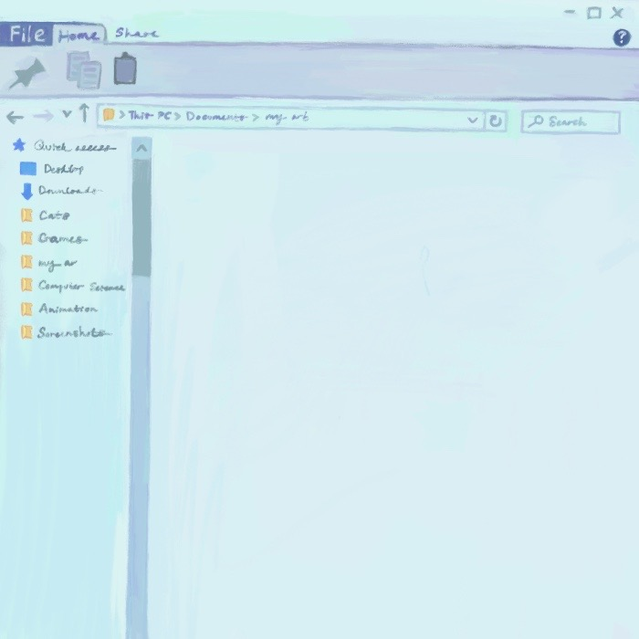
Novarus Tech Internship
Hot Press Internship
Forridge
Dolphin Cove
Pretty Potion
Fresh Farm
Cheesy Road
Sugar Sprint
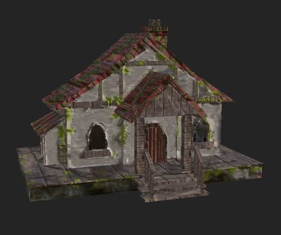
Cottage
Environment
Matte Painting
Data Portrait
Magic Penguin
Love Animation
Reliquary Box
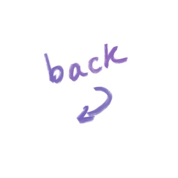
Novarus Technologies Graphic Design Internship, October 19 2025 - Present
Created social and web ad graphics in Canva ✦ Collaborated with marketing and design teams to maintain cohesive brand identity ✦ Contributed creative concepts during campaign brainstorming sessions ✦ Organized and maintained shared design assets and files
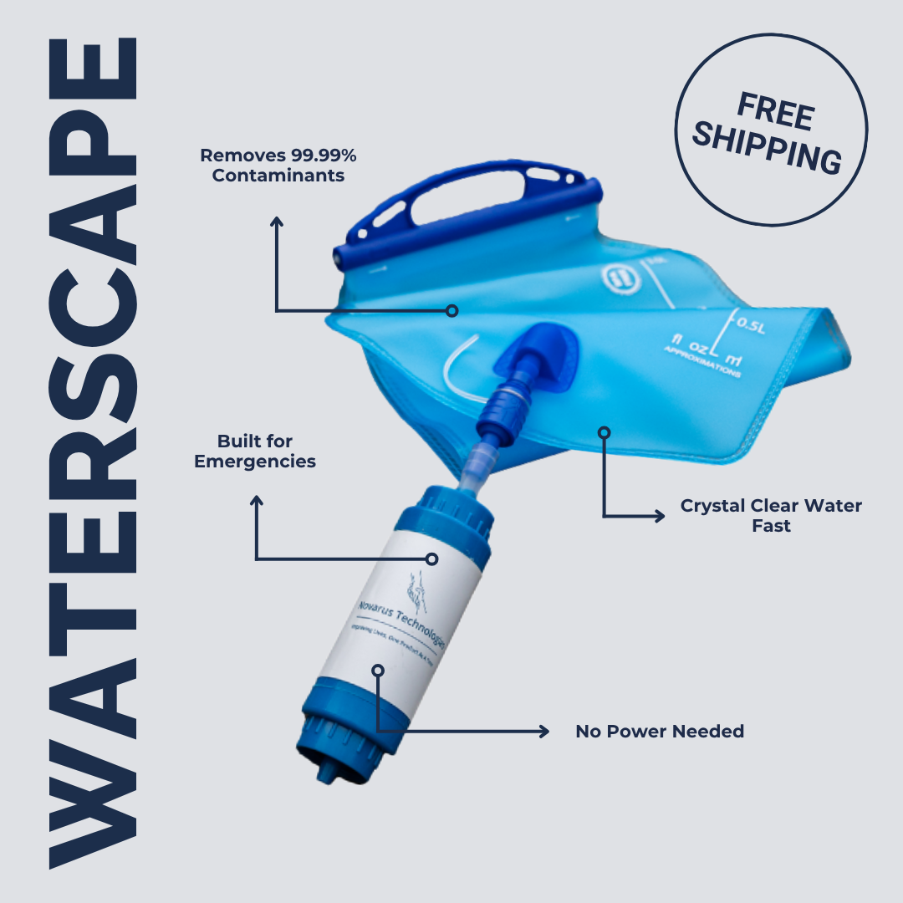
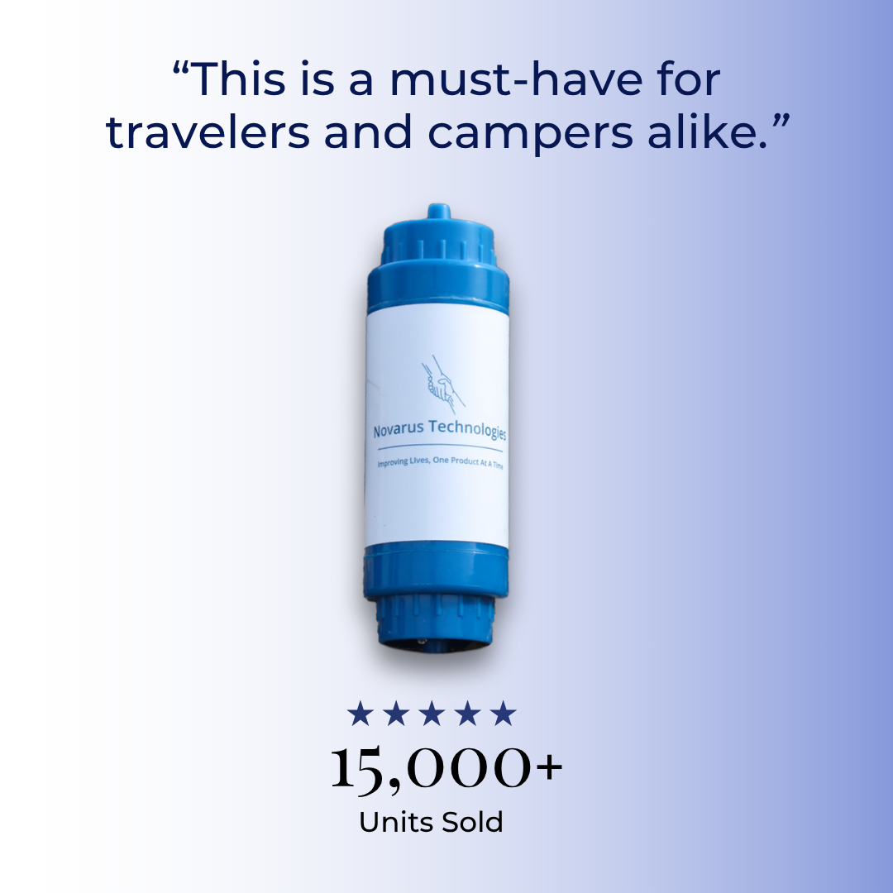
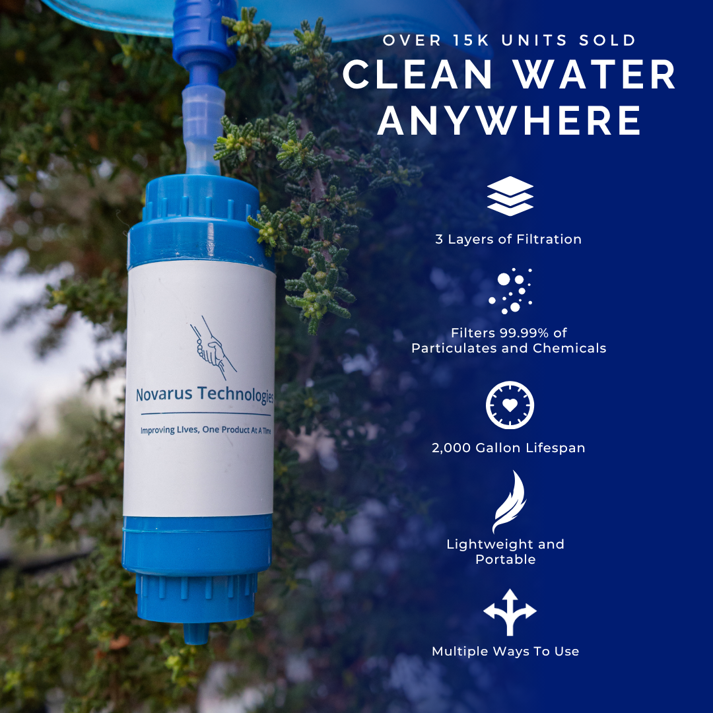
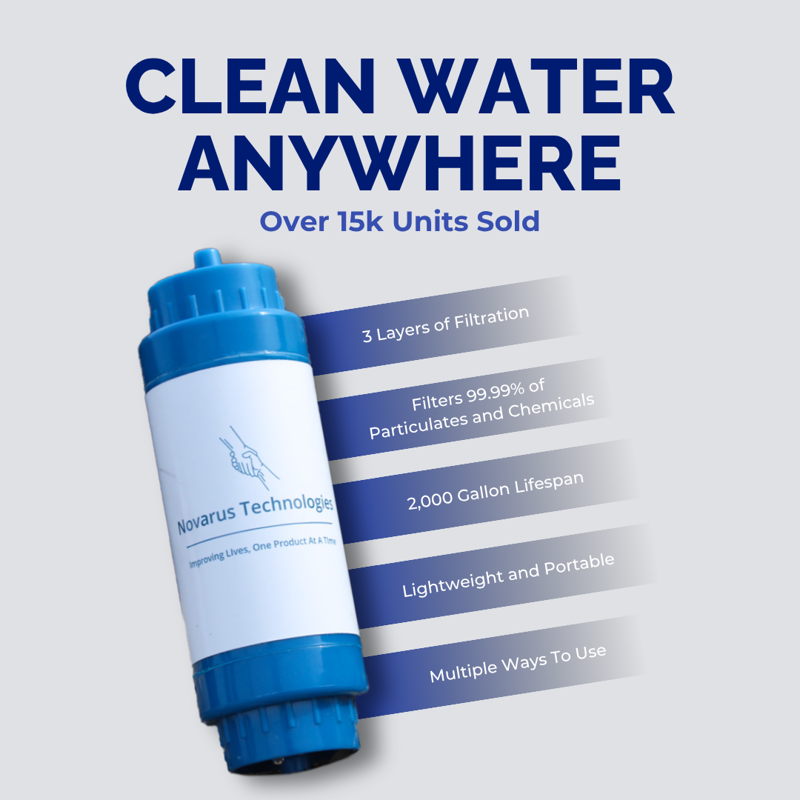
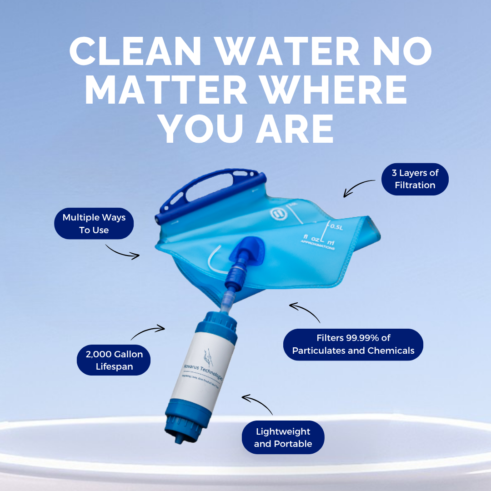
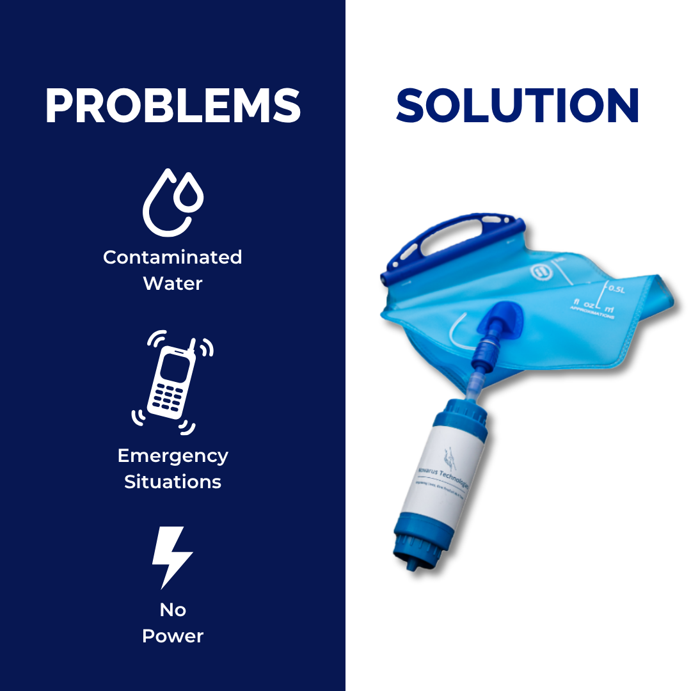
Hot Press Graphic Design Internship, July 5 - December 15, 2024
Assisted in magazine layout and formatting in InDesign, adhering to company style guide and branding ✦ Designed editorial collages and promotional materials in Photoshop and Indesign for print and digital ✦ Created motion graphics and video content for social media content using After Effects and Capcut
Forridge, May 2025
Hand drew all game assets and UI elements ✦ Illustrated concept art for game environments and characters ✦ Storyboarded and designed gameplay and cutscenes ✦ Created parallax effect for background objects ✦ Implemented controls and functionality through C# scripts ✦ Hand drew frame-by-frame character animations ✦ Implemented full Korean translation feature
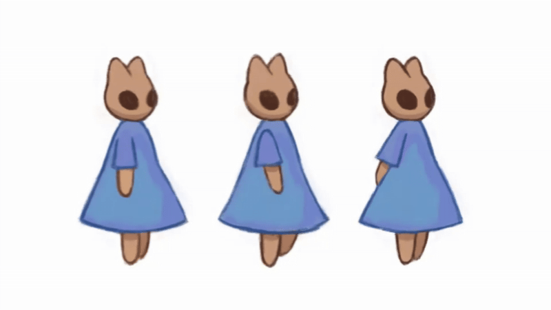
Dolphin Cove, April 2025
Built a dynamic calendar with React Big Calendar, supporting event creation, filtering, and visibility ✦ Designed and integrated UI components for event details, tags, notes, major events, and countdowns
Sugar Sprint, October 2023
Created color concepts ✦ Storyboarded cutscene ✦ Finalized character colors ✦ Hand drew all cutscene illustrations
Cheesy Road, June 2023
Worked in a team to develop a game from concept to final release ✦ Modeled main character and side characters ✦ Applied animations to enemy characters for FSM implementation ✦ Scripted obstacle functionality in C# ✦ Implemented all UI functionality including home screen, tutorials, and settings
Pretty Potion, April 2023
Modeled set and props in Maya ✦ Designed character and storyboarded scene ✦ Textured character in Substance Painter ✦ Modeled, rigged, and animated character in Maya ✦ Edited shots together and added sound effects in After Effects
Cottage, April 2023
Created concept sketches for building ✦ Modeled building in Maya ✦ Painted textures (using community assets) in Substance Painter
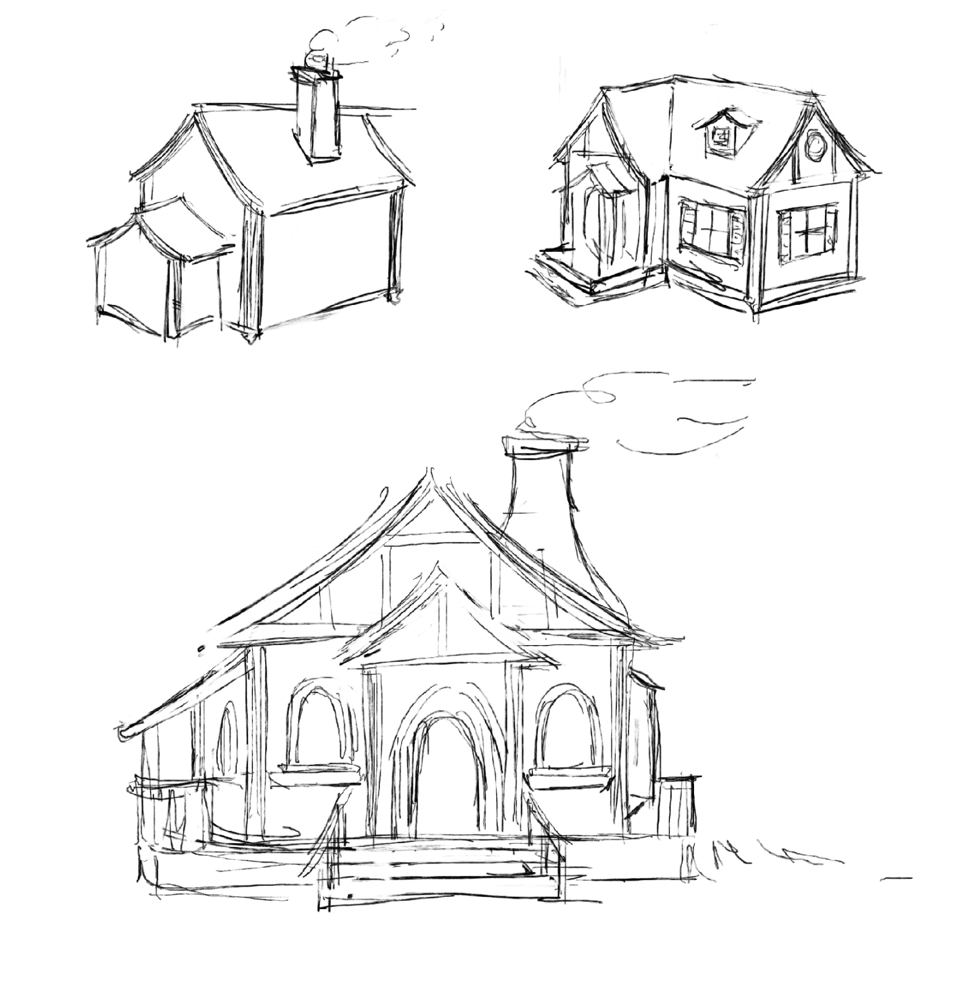
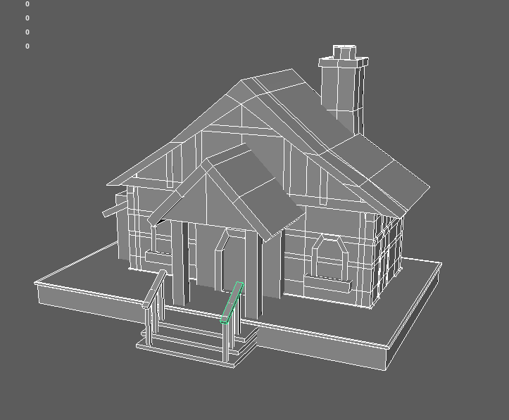
Environment, March 2023
Created terrain in Maya ✦ Created dirt texture in Substance Designer ✦ Textured terrain in Substance Painter ✦ Laid out foliage (provided assets) onto terrain and added environmental effects in Maya
Matte Painting, January 2023
Created sketch for fantasy environment ✦ Created composition from images in Photoshop ✦ Rendered final piece in Photoshop
Data Visualization, September 2023
Tracked personal device usage over the course of a week ✦ Conceptualized and digitally painted visual representation for my data ✦ Created frame-by-frame animation to represent data over time
A Better Way to Talk About Love, October 2022
Worked in a team of three to create a visual accompaniment for a TedTalk audio ✦ Storyboarded the beginning sequence scene ✦ Created an animatic for the scene I was assigned to animate ✦ Animated my scene in Clip Studio Paint staying consistent with the group's chosen art style
Talent Show, December 2022
Designed character and storyboarded animation sequence ✦ Modeled and rigged penguin character and props in Maya (stage provided) ✦ Animated scene in Maya ✦ Compiled rendered sequence and added sound effects in After Effects
Fresh Farm, February 2023
🏆 HackBeanpot 2023 'Best Dunes of the Sahara' Award (Best UI)
Designed website to help farmers sell imperfect products to reduce food waste ✦ Designed website UI using Tailwind CSS ✦ Worked with backend developers to ensure frontend backend compatibility ✦ Created frame by frame animation for logo asset (stock images provided)
Reliquary Box, March 2022
Designed and prototyped box design in Tinkercad ✦ Hand drew flower and foliage designs for lid and sides of box ✦ Drew out topographic game map layers in Procreate ✦ Converted drawings into vector tracings in Illustrator ✦ Laser cut pieces and assembled final iteration